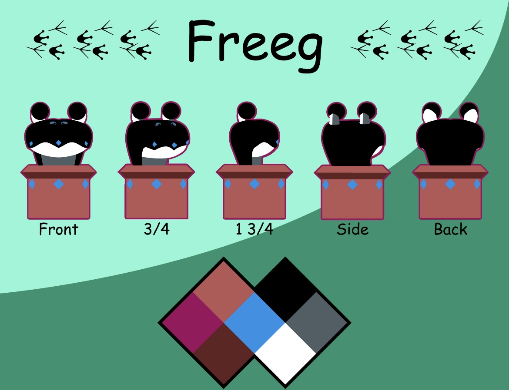

Intermediate Game Design
Game Intro
Intro to Game Design and Development
Game Trailer
This is a game trailer for a game I made called Martian Malfunction. In the game, you are tasked with finding lost pieces of your ship in order to escape this planet, as well as finding anything valuable you can trade in for Credits once you are ready to leave. For the game, I wanted to go for a Wild West theme for the level. I thought that, along with the alien parts strewned throughout the level, would contrast well.
Game Design Psychology


This is a board game called Convergence. This game was completed as part of a team. I did the card assets, character designs, board design, and the Converegence logo. For this assignment, we were tasked with creating our final game for the class. For the characters, they were originally the idea of one of my other group members. Character descriptions are below.

The Iron Legionnaire is a heroic, paladin type. For the design, I wanted to emulate that by giving him a traditional knight's helmet. I also wanted to include inspiration from games such as "Skyrim".

The Lost Prince is a tragic, royal prince. For the design, I wanted to emulate that by giving him more pointed edges like a crown, along with inspiration from games such as "Dark Souls".

The Shadowed Acolyte is a wise, but shady individual. For the design, I wanted to emulate that by giving him a hooded cloak with a beaked mask called a Bautta. These masks were traditionally used by plague doctors, so I thought it would fit.

The Vigilant Squire is an upbeat, naive Squire. For the design, I wanted to emulate that by giving him a more round design to show his kindness (as round as helmets can be). I also wanted to include medieval European style parts to the helmet, such as the mouthguard.
Digital Painting I

Alien World
This is a theoretical alien world. For my alien world, I wanted to go for a hidden base in the mountains sort of vibe. The picture focuses on a rope bridge leading into the mountains and the base. The backdrop is supposed to be violent, chaotic winds with the ghostly remains of life looming in the background.

Character Design
This is a character design based on Yggdrasil, the World Tree from Norse Mythology. The animal parts are inspired by the various animals that live on Yggdrasil. For this character design, I wanted to challenge myself by making a humanoid creature.
Extracuricular
